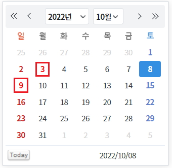
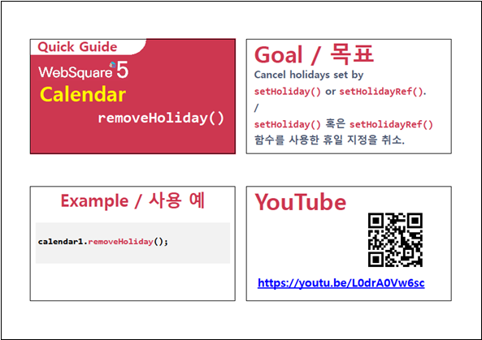

설정한 휴일을 제거하는 예제입니다.
컴포넌트에 휴일이 지정된 상태
컴포넌트에 지정된 휴일 제거하기
설정된 휴일을 확인하기 위해 초기 월이 10월로 지정되었습니다. 10월 3일, 10월 9일이 휴일로 지정되어있습니다.
휴일이 표시된 것을 확인하고 버튼 휴일 설정 제거하기 을 클릭하여 휴일 표시가 제거됨을 확인합니다.
각각의 컴포넌트는 같은 날짜를 휴일로 지정하고 있습니다.
그림 1.브라우저(Chrome) 실행 예시 - 휴일이 지정된 상태

설정별 영역의 버튼 휴일 설정 제거하기 을 클릭하여 휴일 표시가 제거됨을 확인합니다.
그림 2.브라우저(Chrome) 실행 예시 - 휴일에서 제거된 상태
휴일 지정에 대한 내용은 제외되었습니다. 휴일 지정에 대한 내용은 아래의 예제에 포함되어있습니다.
메뉴에서 검색어 휴일을 통해 확인할 수 있습니다.
- 예제명 : [Calendar] 특정 날짜를 휴일로 지정하기 (검색 키워드 : P00073)
- 예제명 : [Calendar] 특정 날짜를 휴일로 지정하기 - DataList 연결 (검색 키워드 : P00074)
//컴포넌트 cal_exam1의 지정된 휴일을 제거합니다.
cal_exam1.removeHoliday();removeHoliday( )
[웹스퀘어5 SP5 개발 가이드] Calendar
링크 : https://docs1.inswave.com/sp5_user_guide/8df43d1f59fab704#56b80cc9fef2c150
[웹스퀘어5 SP5 개발 가이드] Calendar 휴일 지정 취소 (removeHoliday())
링크 : https://docs1.inswave.com/sp5_user_guide/8df43d1f59fab704#e6fc7682d389023e
Calendar 휴일 지정 취소 (removeHoliday())
링크 : https://youtu.be/L0drA0Vw6sc
